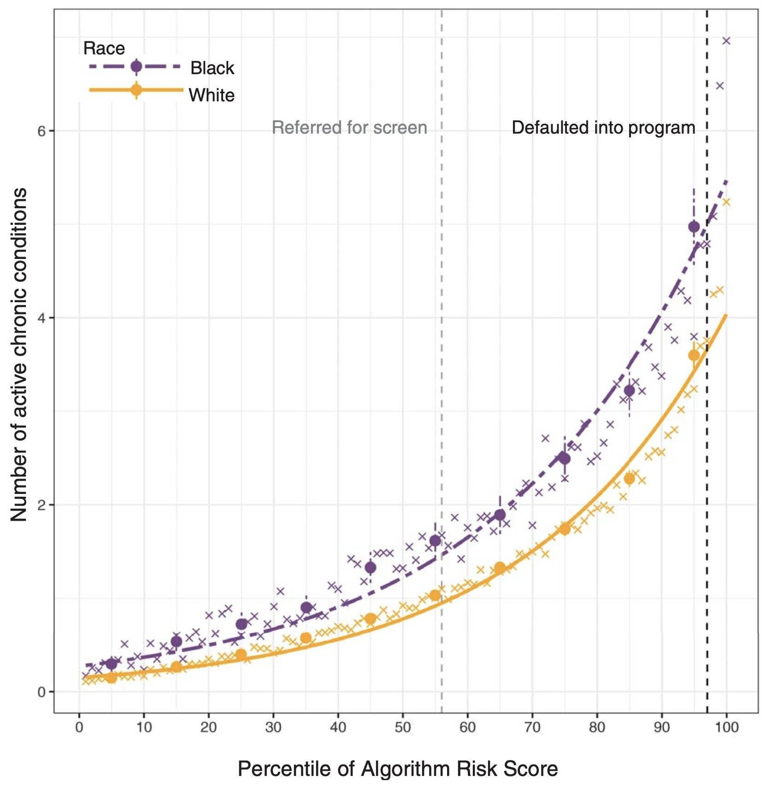

Fighting Bias in AI-Medicine
March 15, 2024
Frederick Douglass famously said in 1857, "power concedes nothing without a demand," referring to the dominance of white Americans that public and private institutions have reinforced. In Algorithms of Oppression, Safiya Noble challenges the idea that current technology offers an equal playing field. In fact, biases abound in the latest healthcare technology, AI, that favor better outcomes for white Americans. Healthcare was one of the first applications of AI. Electronic health records provided the data to train machine-learning models in the early 2000s. Since then, large health systems, payers, and clinicians have relied on AI algorithms to provide medical tools that support decision-making (). Importantly, AI-Medicine aims not to replace doctors but to elevate human performance. However, clinical trials and medical data have historically failed to include racial minorities, and consequently, bias has permeated into AI-Medicine systems. Biases in AI algorithms -- label, automation, and agency bias -- have exacerbated healthcare inequity for non-white patients.
Label Bias
"Human prejudice, misunderstanding, and bias" pervade digital systems and AI-Medicine training data, a phenomenon known as label bias (). Label refers to the data used to teach an algorithm. Label bias occurs when flawed data or correlations cause an algorithm to produce inaccurate predictions (). In machine learning, computer models learn to accomplish tasks like melanoma detection by discerning patterns from training datasets. At inference time, new patterns not present in the training data would confuse a machine-learning model. In the US, the undisputed center of AI-Medicine research, lack of access to healthcare has created a shortage of non-white patient records. Clinical trials have historically lacked a proportionate number of racial and ethnic minorities. Historical data captures these patterns of health disparity, and the models trained on this data reproduce this racial disparity. Imbalanced data can also lead to high false-positive rates for minority patients, desensitizing clinicians to medical alerts for these groups, leading to an unintentional, but nonetheless discriminatory, drop in care quality for underrepresented patients. By causing delays in care, misdiagnoses, and less frequent follow-up visits, label bias worsens health inequity for already disadvantaged populations.
An electronic appointment scheduling algorithm provides a salient example of label bias. Medical clinics often overbook appointment slots to maximize efficiency. However, when multiple patients show up for the same overbooked slot, some of them will have to wait, as a clinician can only attend to one patient at a time. The scheduling model uses a metric called show-up probability to assign patient appointments. It overbooks patients with low show-up probabilities to maximize efficiency. Various statistics factor into calculating a patient's show-up probability: sociodemographic data, previous no-shows, past appointment records, and the time elapsed since the appointment was scheduled. Lower show-up probability typically correlates with lower socioeconomic status due to poor access to transportation, lack of health insurance, and inconsistent employment histories. More likely to have a lower socioeconomic status, Black people have lower show-up probabilities and are more frequently overbooked. Studies have shown that appointment scheduling algorithms can make Black patients wait longer ().
The use of proxy metrics also contributes to label bias. Rather than specific health measures like blood pressure, datasets sometimes employ proxies, like healthcare cost, to represent overall health. Algorithm developers equate lower healthcare costs to healthier individuals. However, minority groups often struggle to access healthcare, so healthcare costs in these populations fail to reflect actual wellbeing (). Proxy metrics can thus incur label bias by unintentionally introducing discriminatory factors to a dataset.

A subset of label bias, cohort bias occurs when datasets disproportionately represent a certain group. The Framingham Heart Study began in 1948 as a long-term, multigenerational cardiovascular experiment conducted on the residents of Framingham, Massachusetts. For the past seventy years, the study's invaluable data have served as the basis for much of the scientific community's knowledge on heart disease. However, the original participant pool consisted of an almost entirely white population. While this fact simply reflected the demographics of Framingham, it also reflected the prevailing Caucasian-centric paradigm of the 1940s scientific community. Researchers only conceived the Framingham Minority Study in 1982, over thirty years after the original study began. A prime example of cohort bias, Framingham Heart Study datasets suffer from an overrepresentation of white people. While findings stemming from these data can certainly apply to white individuals, those results cannot confidently generalize to the full diverse populace. Furthermore, the Framingham Heart Study represents label bias because its health records have yielded skewed datasets.
The prevalence of label bias has generated significant interest in dataset debiasing (). One solution for bias caused by imbalanced data is to collect additional data for underrepresented groups (). Impractical cases, such as when a model is trained on historical datasets or cost and regulatory limitations constrain data collection, necessitate other approaches to mitigating algorithmic bias (). In a recent retinal diagnostic study, researchers applied a common machine-learning technique, data augmentation, to mitigate label bias. The researchers employed a generative machine-learning model to synthesize retina images containing traits more closely associated with Black patients, such as higher fundus pigmentation, arteriolar diameter, and optic disc size. The researchers then added disease markers to these images before feeding them to the machine-learning system. Their study showed significantly more accurate prediction of diabetic retinopathy in Black patients using the data-augmented model compared to the baseline ().
Automation Bias
Only second to label bias, automation bias plagues AI-Medicine. "The public generally trusts information" generated by automated systems (). Any algorithm can automate bias, but AI-bias in particular often goes unrecognized. Clinicians typically formulate the probability of an outcome independently before consulting the results of a diagnostic test. From an unaware clinician's point of view, these "neutral" algorithms have condensed large quantities of presumably valid inputs to produce accurate, real-time predictions, rendering them trustworthy (). Clinicians, therefore, often have a propensity to favor suggestions from AI systems while inadvertently ignoring relevant knowledge from non-automated sources. Automation bias exacerbates existing health disparities due to the feedback loop nature of AI-Medicine. Training clinicians to properly interpret AI outputs may help remedy automation bias ().
Cardiology seems particularly impacted by automation bias. Several cardiology studies have demonstrated the capacity for machine-learning models to replicate and even improve on expert human ability in tasks such as recognizing disease. Cardiovascular imaging plays an essential role in clinicians' decision-making. However, scientists studying an AI model for cardiac magnetic resonance imaging that uses training data from the United Kingdom Biobank detected a high error rate for minority groups due to racially-imbalanced data (). Automation of this technique for measuring cardiac volumes is in the works for replacing manual measurements. Clinicians treating minority patients based on this erroneous information would be committing automation bias. Another example of automation bias lies in the use of a cardiac risk prediction algorithm to inform decision-making on initiating statin therapy (). Guidelines from the American College of Cardiology and the American Heart Association on prevention of cardiac disease recommend that individuals at intermediate risk undergo moderate-intensity statin therapy and those at high risk undergo high-intensity therapy. An individual with disease risks greater than the side effects of medication should be treated. Underestimation of risks by the algorithm or overestimation of therapeutic value can harm the patient. Historical low-quality health records for minority groups have resulted in suboptimal performance of cardiac disease risk estimation algorithms (). Physicians unaware of these facts would perpetuate automation bias.
Algorithm developers have employed various approaches to mitigate racial bias (). Algorithms that calculate estimated Glomerular Filtration Rate (eGFR) to assess chronic kidney disease utilize an "adjustment factor" for Black ethnicity, based on earlier research showing that Black people produce more creatinine in their kidneys. However, more recent studies have shown that ethnicity-adjusted eGFR algorithms overestimate metrics in Black people, which can lead to automation bias in the underdiagnosis of chronic kidney disease in Black communities (). Incorrectly adjusted eGFR algorithms worsen current health disparities by delaying diagnosis and placement on dialysis and kidney-transplant waitlists. This case example suggests that race should be removed from training datasets – if an algorithm does not learn about race, it would not learn racial bias. While removing the ethnicity adjustment reduces bias, it also worsens the overall performance of eGFR algorithms (). Human races differ anatomically, and the exclusion of the race factor can cause models to miss out on important patterns in the training data during their learning process (). Another approach for mitigating racial bias is to train different models for each ethnic subgroup. In this way, an algorithm's results would "prioritize the interests of specific communities" (). However, this approach has its downsides in that it falters on individuals of mixed-race ancestry.
Agency Bias
While substantial bias derives from training datasets, bias also arises from the people who create AI-Medicine systems, known as agency bias. Two factors account for agency bias: a homogenous workforce and corporate resistance to diversity. "Media stereotyping of racial and ethnic minorities has been shown to negatively influence people's perceptions of members of those groups in real life" (). The video of a police officer kneeling on George Floyd's neck in 2020 incited the Black Lives Matter protests but also widened the rift between advocates of human rights and advocates for law and order. This rift further reinforces the racial bias in the AI workforce, which mainly consists of white and Asian males. Likewise, urban riots in the 1960s caused a white backlash to the Civil Rights movement. The government and private businesses in the United States have knowingly segregated housing through discriminatory zoning statutes, mortgage lending practices, and public housing projects. These practices have concentrated African Americans in inferior urban residences and schools. This setting creates a "technological deficit" for African Americans, characterized by the lack of access to computers, digital skill training, and internet connectivity, which has caused their severe underrepresentation in the technological industry (). Technological companies have failed to attract minority groups to their employment pools. In 2016, Google reported that only 5% of its workforce was African American or Latino, despite these groups accounting for 30% of the US population (). Google's product development sees minimal input from minority groups. AI-Medicine suffers from the same problem. Historical medical injustices against African Americans such as the Tuskegee syphilis experiment have sown distrust towards medicine in these communities. These groups may avoid seeking healthcare entirely, barring AI's access to meaningful, authentic health data from them. At the same time, the pervasiveness of social media allows for the massive spread of misinformation over the internet, much to AI-Medicine's detriment (). Despite undeniable biases in AI-Medicine, the media has worsened the problem by spreading falsities and inflating the scale of the field's issues. The media "[influences] our identity development in many arenas," and by spreading misinformation, these platforms reinforce distrust of medicine in minority groups (). The media has, unfortunately, also contributed to the politicization of healthcare, which impairs public trust in the growing AI-Medicine field. This digital divide greatly contributes to agency bias.
The second factor for agency bias arises from corporate resistance to diversity. Stakeholders involved in AI-Medicine have conflicting interests. Clinicians and patients want to avoid harm while algorithm developers and payers want to reduce costs. While some corporations such as Microsoft and IBM have publicly committed to fighting bias in their products, other companies, like Amazon, have criticized such efforts. Investing in solutions that decrease algorithmic bias comes at a price, a price stakeholders generally do not want to pay. "Algorithms that rank and prioritize for profits compromise [their consumers'] ability to engage with complicated ideas," and so a healthcare algorithm built by a private company, true for most AI-Medicine systems, will not necessarily work in the general public interest (). Even when the goal of decision makers is not outright discrimination, actions may lead to inequities. For example, if the goal of a machine-learning system is to maximize efficiency, that may come at the expense of disadvantaged populations. Increased diversity in AI-Medicine may give minority groups a "transformative impact" in the product development process such that teams can catch bias before products reach the general public (). A diverse workforce may contribute to progress, such as increased non-white data collection, that does not propagate racism ().
Regulation and the Future of AI-Medicine
AI has been suggested as the key to harnessing the precious information present in exponentially growing healthcare datasets. However, signs of a "techlash" and public concern over algorithm racial bias are also emerging. In 2020, the US government issued a report on AI that directed federal agencies to avoid hampering AI innovation and growth. Thus, at least for the time being, the AI-Medicine industry can self-regulate. In the United States, several healthcare accreditation and certification programs, such as the National Committee for Quality Assurance and the Joint Commission, provide a precedent for industry self-governance (). A similar third party, independent organization can oversee the development of standards for AI-Medicine. However, the accreditation and certification methods must not create costs that deter AI developers from innovation. Relying on industry self-governance offers the advantages of acting with greater speed and technical expertise than the government, bypassing partisan politics and regulatory deadlocks, and reaching across national jurisdictions ().
Conclusion
The biases that plague AI-Medicine should not discredit its positives. Elon Musk's Neuralink recently completed its first successful brain implant, a promising step towards the company's admirable goal of helping people with paralysis communicate through brain activity. From personal experience, my mother practices otolaryngology (medicine of the ear, nose, and throat), and despite her general disdain for technology, she has found a new copilot in AI sinus-imaging software. In accordance with the goals of AI-Medicine, this tool greatly elevates human performance but does not replace humans. On another note, despite significant discussion on how algorithmic bias can harm minority groups, models trained on large corpuses of mostly slightly-biased data can counteract heavy biases held by individual doctors.
Technology ties inextricably to capitalism. The success of one leads to the advancement of the other, and vice versa. This economic system has elevated the living standard and life expectancy for Americans since the 1960s, but it has inevitably exploited the labor of colored peoples. To counter these oppressive forces and sustain capitalism, healthcare has aimed for equity and kindness. However, the introduction of AI into healthcare puts this lofty goal in question. While it can help specialist doctors with complex tasks, especially those in the imaging sector and those that require extreme precision, this technology improves safety but does not cut costs for procedures. For now, AI-Medicine algorithms find use in the large health system and payer industry, locating where companies can best afford to cut costs in a climate of hefty healthcare prices. Yet despite the intention of fairness, AI-Medicine with all its biases currently propagates oppression. In the words of Haile Selassie, "until the color of a man's skin is of no more significance than the color of his eyes…and until the basic human rights are equally guaranteed to all without regard to race, there is war." AI-Medicine must fix its bias problems.